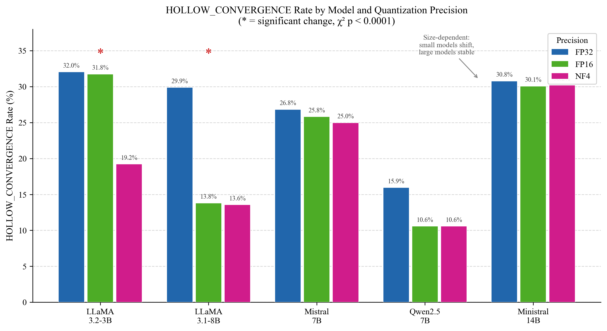

Building agentic architectures and LLM inference systems that reason reliably at scale
MS Applied Machine Learning • University of Maryland
Understanding where and why reasoning silently fails
Current Work
I discover critical bugs in LLM systems that cause silent reasoning failures. Recently, I found a KV-cache quantization bug in vLLM that causes 94% generation collapse under default settings, and built a linear probe that predicts stuck reasoning chains from model activations (AUC 0.612 vs 0.445 baseline).
My research on quantization-induced reasoning failures has been submitted to IEEE ICTAI 2026, and work on mechanistic early-detection of reasoning non-convergence was accepted to the COLM 2026 Efficient Reasoning Workshop. I care deeply about reproducibility and rigorous evaluation.
AI systems spanning LLM inference and agentic architectures
vLLM KV-Cache Quantization Reasoning Evaluation
Investigated whether vLLM's KV-cache quantization modes cause silent reasoning failures. Found that calibrated FP8 causes near-total generation collapse (94% failure) while int8_per_token_head closely tracks unquantized baseline accuracy. Findings referenced in vLLM's issue tracker.
View on GitHub →Adaptive Multi-Model Agent
LangGraph-based agent that routes requests between fast and strong models based on live task-difficulty classification, with input/output guardrails against injection and hallucination. Achieves 98% routing accuracy with 28.2% cost reduction.
View on GitHub →SWE-Researcher: Autonomous Code Generation Agent
Agent that analyzes a repository, implements features via LLM generation, enforces 80%+ test coverage, executes in sandboxed Docker containers, and opens pull requests autonomously with self-correcting debugging.
View on GitHub →Personal Knowledge Agent (MCP Server)
Persistent belief-graph agent that ingests documents, resolves duplicate entities via semantic matching, detects contradictions across sources, and answers queries with per-fact citations. Exposed as MCP server for Claude Desktop.
View on GitHub →Inference Server: Continuous Batching + Paged KV-Cache
Built three LLM serving backends from scratch to compare naive serial, static batching, and continuous batching with paged attention. Demonstrates head-of-line blocking problem that motivates production techniques.
View on GitHub →Shadow Deployment Framework
Production ML serving system that runs champion and challenger models in parallel, automatically detecting statistical degradation via hypothesis testing, and rolling back within 60 seconds without human intervention or latency impact.
View on GitHub →AI research on reasoning failures and efficient inference

Silent Failures in Quantized LLM Reasoning
A Taxonomy-Based Analysis of Hollow Convergence and Failure Mode Shifts
Comprehensive taxonomy analyzing failure modes when quantizing reasoning models to low precision, revealing the "Hollow Convergence" phenomenon where models output correct answers while internal reasoning completely breaks.
Read on arXiv →Experience & roles
- Evaluated proprietary agentic framework across tool calling, memory management, and variable input sizes
- Built TypeScript testing agent using AST parsing, achieving 93% average code coverage across 50+ enterprise modules
- Benchmarked test case generation against GitHub Copilot across 10+ quality dimensions
- Built end-to-end Random Forest Regression pipeline for battery charging prediction with 4-person team
- Achieved 90–95% prediction accuracy on sensor data preprocessing and model validation
- Won Best Student for Research Inclination Award
- Built multimodal sentiment classifier combining video frames, audio, and transcripts
- Achieved 90%+ accuracy across 3 labels and demoed results to AI research team
- Analyzed 10K–100K-record cocoon market datasets to surface peak sale-rate conditions
- Built MERN-stack farm management web app and presented findings to founders
Core competencies
Let's collaborate
Interested in discussing LLM systems, agentic architectures, reasoning failure analysis, or production ML. Open to New grad 2027 roles.